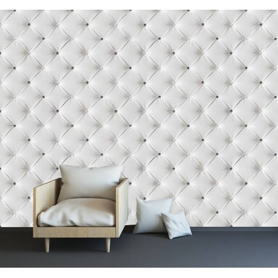

Iris :: Tapetai
Prekiaujame apdailos medžiagomis ir vonios įranga, dalijame 29 metus kauptą patirtį
Pradžia Prekės Plytelės Vonios kambarys PVC (linoleumas) Kiliminė danga Kilimai Laminatas Parketas Tapetai Sienų dekoras Klijai, glaistai ir kt. Fasadai 2020 m. plytelių tendencijos Prekių panaudojimas Grindys Šildomos grindys Lauko laiptai Vidaus laiptai Plytelių klojimas lauke Daugiabučių renovacija Mes Kontaktai Dosje Paslaugos Paslaugos internetu Prekių asortimentas E-Parduotuvė E-Išparduotuvė + Akcijos Meistrai Kaip pirkti iš e-katalogų Testai Iris Prekės TapetaiTapetai
Klasikiniai tapetai Dažomi Fototapetai SkystiKlasikiniai tapetai
Klasikiniai tapetai: popieriniai, viniliniai, flizelininiai, tekstiliniai, veliūriniai, natūralaus pluošto tapetai. Savybės ir skirtumai.
Dažomi
Dažomi stiklo pluošto ir dažomi viniliniai tapetai. Savybės ir panaudojimas.
Fototapetai
Fototapetai. Jų savybės.
Skysti
Skysti tapetai. Kas tai?
‹ ›Informacija
Žinoti, nesuklysti
Katalogai
Grožėtis, rinktis, pirkti
E-parduotuvė
Greit pirkti
Tapetai – viena iš klasikinių sienų dekoravimo priemonių.
Būna laikotarpių, kai sienų dažymas tampa populiaresnis už dekoravimą tapetais, bet kiekvienas naujos tapetų rūšies atsiradimas vėl sužadina susidomėjimą jais. Tapetai nuolat tobulėja, keičiasi. Tampa neatpažįstami – neretas, pirmą kartą pamatęs skystus tapetus, pavadins juos bet kuo, bet ne tapetais.
Šalia naujausių technologinių kūrinių vis dar nepamiršti įprasti popieriniai, viniliniai, flizelino ar tekstiliniai, natūralaus pluošto tapetai. Panaudojimo vietą rado stiklo audinio tapetai, naujai atgimė fototapetai, nežinia, ką žada 3D tapetai... Kodėl jų tiek daug? Todėl, kad kiekvienuose namuose sienų daugiau nei grindų... Ir niekas nenori gyventi tarp vienodų sienų.
Tapetai, kaip sienų dekoravimo priemonė, išsiskiria didele raštų įvairove. Čia pateikiame keletą populiaresnių tapetų raštų, kuriais puošiamos namų sienos.
Vienspalviai lygūs tapetai – klasika, tinkanti prie bet kokio interjero. Beliks išsirinkti spalvą – švelnią pastelinę ar rėksmingai ryškią. Skonio reikalas.
Visada madingi - klasikinio rašto tapetai.
Nuotaikos namų interjerui įneš dryžuoti tapetai . Horizontalios juostos patalpą vizualiai praplatins, o vertikalios paaukštins. Populiaresni – vertikaliomis juostomis tapetai.
Įprastais ar įmantresniais geometriniais raštais dekoruoti tapetai interjerui suteiks žaismingumo. Tapetai su stambiomis geometrinėmis figūromis geriau derės erdviose patalpose, nes masyvūs raštai mažina kambario plotą.
Nesenstanti klasika – gamtos motyų tapetai (gėlės, lapai, medžiai). Pasirinkimas didelis: nuo smulkaus rašto, pastelinių spalvų klasikinių tapetų iki intensyvių spalvų, stambiais piešiniais margintų tapetų.
Norintiems egzotikos – tropinių augalų ar gyvūnų motyvais dekoruoti tapetai.
Tapetais gali būti imituojama mediena, marmuras, betonas, plytelės, mozaika, tekstilė.
(Balsų: 14 ) Klausti ar komentuoti galite po kiekvienu straipsniu.
Atsakymą į klausimą rasite šiame puslapyje ir savo el. pašte.
Komentarai
RŪTA 2017-03-01 17:13 Laba diena,ar turi pateikti parduotuvė klientui paprašiu kokybės sertifkatą bei aprašą kokios rūšies tai tapetai. Ačiū. Iris (Eglė) 2017-03-02 07:02 Laba diena,
Klientui pageidavus, pardavėjas kreipiasi dėl sertifikato gavimo į gamintoją. Sertifikatas atkartoja tapeto rulonėlio etiketės informaciją.
Ne visi gamintojai sertifikuoja savo gaminius. Popieriniai tapetai nesertifikuojami. Jolita 2017-07-05 13:29 Laba diena, ar turite 3D tapetų? Lina 2017-07-06 18:54 Laba diena,
Pagal baltą spalvą atsifiltravus tapetus, atsifiltruoja rudi ir kitokių sp. tapetai, tačiau parašyta, kad yra tokių baltų. Kaip suprasti? Iris (Eglė) 2017-07-10 05:22 Laba diena, Jolita,
Taip, turime. 3D tapetų katalogą galite rasti mūsų parduotuvėse: http://www.iris.lt/iris/kontaktai/prekybos-salonai/ Šie tapetai gaminami pagal specialų užsakymą. Iris (Eglė) 2017-07-10 06:08 Laba diena, Lina,
Reali spalva ne visuomet atitinka matomą nuotraukoje, tad patariame išsirinktus tapetus apžiūrėti mūsų parduotuvėje. virginija 2017-08-13 18:15 sveiki,o kur suzinoti kainas Iris (Eglė) 2017-08-16 11:26 Laba diena,
Didžiąją dalį tapetų kainų galima rasti mūsų elektroninėje parduotuvėje - http://www.iris.lt/e-parduotuve/tapetai/tapetai
Jeigu ieškote fototapetų kainų, jas galima rasti - http://www.iris.lt/prekes/tapetai/katalogas/fototapetai/
Jeigu domina skystų tapetų kainos, esančios nuorodoje - http://www.iris.lt/prekes/tapetai/katalogas/skysti-tapetai/ , nurodykite konkrečią poziciją, kuri Jus domina ir mes atsiųsime Jums kainą. aiste 2017-08-25 16:54 Labas vakaras, gal galėčiau sužinoti skystu tapetų kainą. Kodas 5.8 alyviniai. Ačiū Iris (Eglė) 2017-08-30 11:25 Laba diena,
Atsakymą išsiuntėme el. paštu. Bronius 2017-09-29 05:57 Laba diena.Ar atvykstame į butą pakonsultuoti ir padedate parinkti tinkamus tapetus,kiek tai kainuoja. Iris (Eglė) 2017-09-29 06:55 Laba diena,
Tokios paslaugos neteikiame. Paprastai pakanka parduotuvėje nusakyti pageidavimus ir pagal juos parinkti tinkamus tapetus.
Kai kuriais atvejais galima parduotuvėje gauti tapetų katalogus ir pagal juos namuose pasirinkti tinkamus. Loreta 2017-11-06 11:19 Laba diena,
Jūsų salone pirkome tapetus. Gal turite ir galite rekomenduoti meistrus, kurie galėtų išklijuoti Kaune.
Dėkui. Iris (Egesta) 2017-11-06 11:24 Laba diena,
Su Jumis susisieks mūsų vadybininkas. Vytautas 2018-03-23 18:01 Sveiki,
Esame pirkę MARBURG tapetus, etiketėje pažymėta jog reikia tepti sieną arba tapetą, tapetas flizelino pagrindu kokį variantą pasirinkti klijuoti? Nes meistras sakė jog flizelininiams tepasi tik siena,o viniliniams tapetas rekia tepti tapetą ir sieną... bijo sugadinti... Iris (Marius) 2018-03-26 08:29 Laba diena,
Kaip ir nurodo Marburg tapetų etiketės, klijuoti galima klijus tepant ant sienos arba ant tapeto. Bet jokiu būdu nerekomenduoja tepti ir ant sienos, ir ant tapeto. Genovaite 2018-07-06 14:30 Laba diena. Noreciau paklausti ar tinka skysti tapetai vonios kambariui? Iris (Marius) 2018-07-09 08:24 Laba diena,
Skystus tapetus galima dėti vonios kambaryje, išskyrus ant sienos, ant kurios tiesiogiai patenka vanduo. Darius 2018-09-01 18:51 Ar yra akustines kambario savybes gerinančių tapetų? Iris (Marius) 2018-09-03 05:31 Laba diena,
Visi tapetai (labiau storesni ir nelygūs) kažkiek gerina akustines patalpų savybes, bet išskirtinai tam skirtų - neturime. Lida 2019-02-06 13:42 Sveiki, pirkau jūsų pard tapetus CRISTIANA MASI 3931 norėčiau paklausti kokius klijus geriausia pirkti. Ačiū Iris (Marius) 2019-02-06 14:11 Laba diena,
Klijuokite Metylan Vlies Premium klijais skirtais flizelininiams tapetams: http://www.iris.lt/e-parduotuve/metylan-fliselin-premium-250-g-klijai-flizelininiams-tapetams-1 Rima 2019-04-05 06:41 laba diena,dirbu mokykloje ūkvedę,patarkite,prašau-kokie tapetai tinka išklijuoti senas sienas,pastatas senas,sienos nelygios,ačiu. Iris (Marius) 2019-04-08 06:18 Laba diena,
Nelygioms sienoms geriausiai tiktų stiklo pluošto tapetai.
http://www.iris.lt/e-parduotuve/tapetai/tapetai?store=&tapetas_technologija=279 Edita 2019-08-18 13:40 Sveiki. Domina tapetai su bambukais. Kokia ju kaina ? Iris (Inga) 2019-08-19 06:04 Laba diena,
Šių tapetų jau nebeturime. Rasa 2019-09-21 11:40 Laba diena, ar turite juostelių virš tapetų? Iris (Marius) 2019-09-23 08:55 Laba diena,
Deja, neturime. Julija 2020-02-01 22:43 Sveiki, ar turite tapetus Decoprint, kur zali lapai su oranzinem gelytem?Aciu Iris (Inga) 2020-02-03 14:17 Laba diena,
Šių tapetų sandėlyje neturime, bet galime juos užsakyti iš gamintojo.
Orientacinis gavimo terminas – 4 savaitės. Lina 2020-06-05 20:07 Sveiki. Kodėl neišimate iš reklamos tapetų, kurių nebeturite? Taip klaidinate pirkėjus Eglė 2020-07-08 09:33 Laba diena, domina fototapetai, kodu F-A-0113-j-c. Kaina, pristatymo terminas, ar galima juos klijuoti kaip paprastus tapatus visą sieną? Jurgita 2020-10-23 09:39 Laba diena ar turite tapetų Postcard? Iris (Marius) 2020-10-26 12:46 Laba diena,
Deja, ne.
Bendraukime
Kokybės linija 8 630 06998
I–V 8–12 ir 13–17 val . info@iris.lt Bendri klausimai 8 315 55969 I–V 8–12 ir 13–17 val . info@iris.lt E-prekybos klausimai
I–V 8–12 ir 13–17 val.
eprekyba@iris.ltDraugaukime
PrisijungtiRegistruotis
Naujienų prenumerata
↑ Į viršų
© 2020 Visos teisės saugomos.